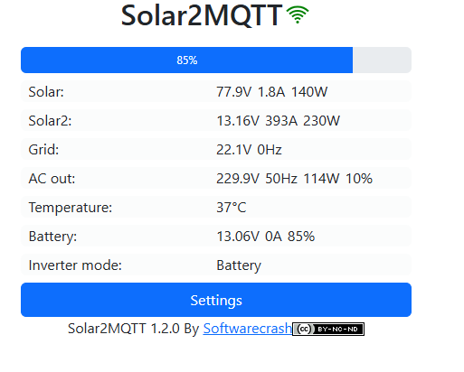

Developed and deployed a 1.2 kWp solar photovoltaic (PV) system to support renewable energy adoption within the manufacturing facility. The project included solar panel installation, inverter integration, electrical distribution, and a real-time monitoring platform that enables engineers to monitor energy generation, battery status, and inverter performance remotely using the Solar2MQTT system.
PV Capacity
Monitoring Controller
Real-Time Data
Developed and deployed a 1.2 kWp solar photovoltaic (PV) system to support renewable energy adoption within the manufacturing facility. The project included solar panel installation, inverter integration, electrical distribution, and a real-time monitoring platform that enables engineers to monitor energy generation, battery status, and inverter performance remotely using the Solar2MQTT system.
Watch the installation and commissioning of the solar monitoring system directly below.
This screenshot shows the Solar2MQTT monitoring dashboard used for real-time energy tracking and system performance analysis.

This project expanded my experience in renewable energy systems, Industrial IoT, and energy monitoring. It strengthened my expertise in photovoltaic system integration, inverter communication, MQTT-based data acquisition, embedded systems, and real-time monitoring while demonstrating how open-source technologies can be utilized to build scalable and cost-effective smart energy solutions.